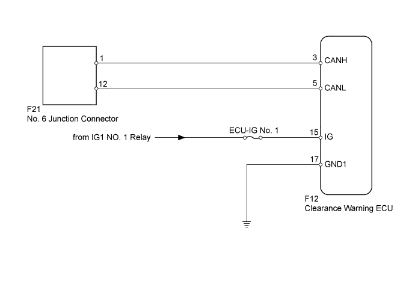
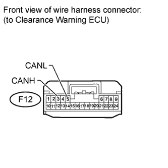
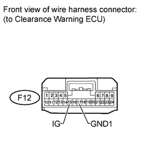

DTC U1110 Lost Communication with Clearance Sonar Module |
| DTC Code | DTC Detection Condition | Trouble Area |
| U1110 | There is no communication from the clearance warning ECU. |
|

| 1.DISCONNECT CABLE FROM NEGATIVE BATTERY TERMINAL |
Disconnect the cable from the negative (-) battery terminal before measuring the resistances of the main wire and the branch wire.
| NEXT | |
| 2.CHECK FOR OPEN IN CAN BUS WIRE (CLEARANCE WARNING ECU BRANCH WIRE) |
 |
Disconnect the F12 clearance warning ECU connector.
Measure the resistance according to the value(s) in the table below.
| Tester Connection | Switch Condition | Specified Condition |
| F12-3 (CANH) - F12-5 (CANL) | Engine switch off | 54 to 69 Ω |
|
| ||||
| OK | |
| 3.CHECK HARNESS AND CONNECTOR (CLEARANCE WARNING ECU - BATTERY AND BODY GROUND) |
Connect the cable to the negative (-) battery terminal.
 |
Disconnect the F12 clearance warning ECU connector.
Measure the resistance according to the value(s) in the table below.
| Tester Connection | Condition | Specified Condition |
| F12-17 (GND1) - Body ground | Always | Below 1 Ω |
Measure the voltage according to the value(s) in the table below.
| Tester Connection | Switch Condition | Specified Condition |
| F12-15 (IG) - Body ground | Engine switch on (IG) | 11 to 14 V |
|
| ||||
| OK | ||
| ||